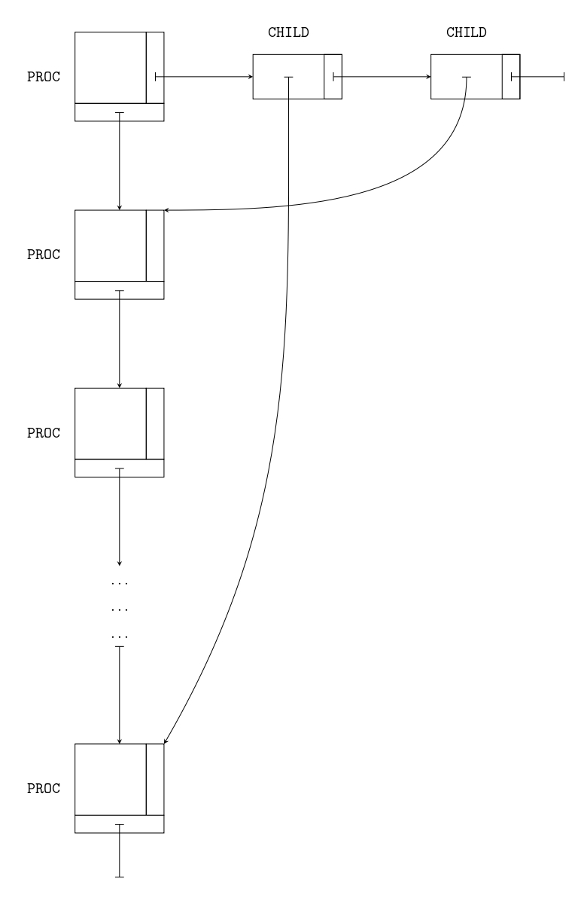
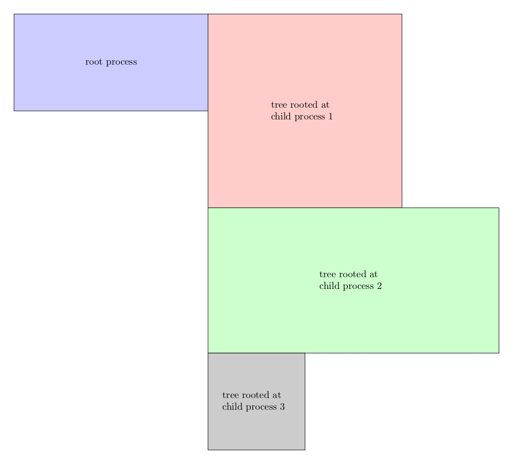
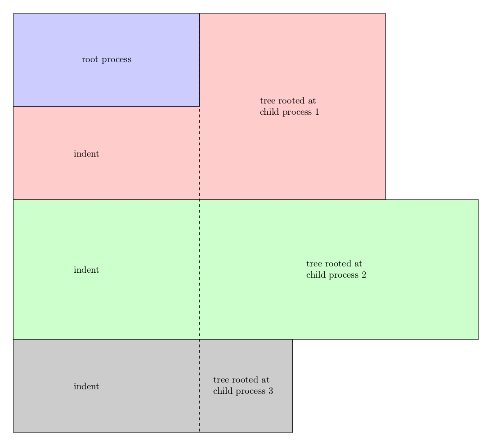

Intro
pstree is a program in the package psmisc and can be downloaded on the site of Ubuntu packages. And now it is used as a Minilab(M1) of OS Course in NJU.
According to the handout of M1, I only need to implement a simplified version of pstree, including option Vpn and the corresponding long options. To accomplish the target, the whole program can be divided into three parts:
- Read and process the options
- Read the info of processes(pid, ppid(pid of the parent process), name)
- Save the info of processes and build the data structure of them
- Print the processes as a tree
Actually, the 2nd and 3rd parts are done simultaneously.
How to read and process the options
Certainly, I can use fancy pointer operations to deal with options. But that is very error-prone and time-consuming. And it is unworthy since Linux already has a library function getopt_long to deal with both the short and long options.
man getopt_long or reading the standard source code to know more.
How to read the info of processes
There are many ways to read the info. After reading the standard code, I used a similar way to do it—Use directory stream* to get pid and process the status file stat of every process to get name and ppid.
*directory stream: a stream of struct dirent * objects, each one points to an object in the directory on which the directory stream is created.
Use directory stream to get pid
Why can we do that? Well, in Linux, Everything is file. So the info of all processes are stored under “/proc/“ as files.
Since every process has a unique pid, Linux uses the pid as the name of the directory under “/proc/“ to store unique info of every process. For example, the info of the process with pid 1711 is stored in “/proc/1711/“.
And there is no other file or directory whose name is number under “/proc/“. So we are free to use directory stream to process every object under “/proc/“ and once we get an object whose name is a number, we know the number is pid.
A few details
DIR *opendir(const char *name);returns aDIR *as a directory stream onname.struct dirent *readdir(DIR *dirstream);returns astruct dirent *, if there is more and returnsNULLif the directory stream is empty.the
d_namecomponemt ofstruct direntstores the name of thestruct dirent, which in our case is the pid.d_nameis a string, but we can usestrtolto transform it into number. And ifstrtolfailed, we know it is not the pid-named directory and can be ignored for good.
man opendir readdir strtol to know more, especially the error-detection mechanisms for these library functions.
Code
The code below also includes some error-detection mechanisms.
1 |
|
Use stat file to get name and ppid
As we said before, all the info of a process is stored under “/proc/[pid]”. In particular, the status info is stored in “/proc/[pid]/stat” as a regular text file. The first four words in the text file are pid, process name in parentheses, status and ppid.
Since the name is surrounded in parentheses, we only need to locate the leftmost ‘(‘ and the rightmost ‘)’. (Search for the leftmost ‘(‘ or rightmost ‘)’ is wrong because the name itself may have parentheses in it.)
Once we find the rightmost ‘)’, we can start from it to read the ppid. The ‘status’ is a single capital character and can be ignored.
A few details
Use
strchrto find leftmost ‘(‘ andstrrchrto locate the rightmost ‘)’By using assignment-surppressing character in
sscanf, we can ignore ‘status’ info character.
Code
add_proc is for building the data structure.
1 | sprintf(path, "%s/%d/stat", PROC_DIR, pid); |
The code to handle threads is very similar to the code to handle processes. Threads info is stored in “/proc/[pid]/task/[tid]”. And its status info is stored in “/proc/[pid]/task/[tid]/stat”.
How to save the info and build the data structure
The first thing we need to do is design the data structure to represent a process. After that, we may use a convenient way to save it while reading it from part 2.
The PROC struct
Since we need to print the name, pid of a process, these two components must be in PROC struct. But the rest is hard to say. The final result is a tree, so we may build a real tree in the computer, with every node being a PROC struct.
But after reading the standard source code, I found a better way to represent the processes and the relation between them. That is, use a linked list of PROC to store all the processes and the order does not matter. However, in every PROC struct, we have a linked list of PROC *, of which each cell points to a child process.
It is like this:

So the PROC and CHILD definition should be:1
2
3
4
5
6
7
8
9
10
11
12
13typedef struct proc {
struct proc *next; // next proc in the list
struct proc *parent;
struct child *children;
pid_t pid;
char comm[COMM_LEN + 2 + 1 + PID_LEN]; // 1 for '\0', 2 for threads brackets, 10 for the pid
char isThread;
} PROC;
typedef struct child {
const PROC *proc;
struct child *next; // next pointer to proc in the list of child
} CHILD;
Build the whole data structure
Now that we have the definition of structs, we may proceed to figure out how to build the data structure. One way to do it is:
- read the info of all the processes, build the
PROClinked list - traverse the
PROClist again and build parent-child relation(CHILDlist of every proc) according to the ppid of everyPROC.
Note that when we first add a PROC, we may not be able to find its parent because it may have not been added to the PROC list. But after reading the standard source code, there is another way:
- When we add a
PROCwhose parent is not in thePROClist, we add the parentPROCinto the list. Even though we don’t know the name of the parentPROC, we know its pid(i.e., ppid of current process) and that is enough because we searchPROCby pid, which is unique for every process. - When we try to add a
PROC, we first check whether it is added by its children. If it is, we rename it. Otherwise we add it.
Both of the ways are effective. And they are equally (in)efficient for having $O(n^2)$ time complexity.(it is OK because we normally have <1000 processes in out system.) The choice is up to you. I believe the second one involves some kind of cyclic processing, which is neat. Of course, someone may claim it is error-prone and confusing. But as I said, it is up to you.
Code
1 | PROC *add_proc(const char *comm, pid_t pid, pid_t ppid, char isThread) { |
How to print the processes as a tree
The simple answer is recursion. Normally when it comes to problems about tree, we came up with some recursion algorithm. And this is a simple one. To print the tree, we need to:
- print the root process
- print the tree rooted at children processes
But someone thinks that the 2nd step is like this:

It is wrong. Actually, it is like this:

That is why I need to add an argument indent to print_proc.
Code:1
2
3
4
5
6
7
8
9
10
11
12
13
14
15
16
17
18
19
20
21
22
23
24
25
26
27
28
29
30
31
32
33
34
35
36
37
38
39
40
41
42
43
44
45
46
47
48
49
50
51
52typedef struct _formatter {
const char *single;
const char *first;
const char *branch;
const char *vertical;
const char *last;
const char *blank;
} FORMAT;
FORMAT formatter = {
"---", "-+-", " |-", " | ", " `-", " "
};
void print_tree(const PROC *root, const char *indent) {
char *comm = (char *) malloc(strlen(root->comm) + 10);
if (showPid) {
sprintf(comm, "%s(%d)", root->comm, root->pid);
} else {
strcpy(comm, root->comm);
}
printf("%s", comm);
char *new_indent = (char *) malloc(strlen(indent) + strlen(comm) + 3 + 1 + 10); // 3 for formatter, 1 for terminator
if (root->children == NULL) { // no children
puts("");
free(new_indent);
free(comm);
return;
} else if (root->children->next == NULL) { // one child
printf("%s", formatter.single);
sprintf(new_indent, "%s%s%*s", indent, formatter.blank, (int) strlen(comm), "");
print_tree(root->children->proc, new_indent);
} else { // multiple children
CHILD *child_p = root->children;
printf("%s", formatter.first);
sprintf(new_indent, "%s%*s%s", indent, (int) strlen(comm), "", formatter.vertical);
print_tree(child_p->proc, new_indent);
child_p = child_p->next;
for (; child_p->next; child_p = child_p->next) {
printf("%s%*s%s", indent, (int) strlen(comm), "", formatter.branch);
sprintf(new_indent, "%s%*s%s", indent, (int) strlen(comm), "", formatter.vertical);
print_tree(child_p->proc, new_indent);
}
printf("%s%*s%s", indent, (int) strlen(comm), "", formatter.last);
sprintf(new_indent, "%s%s%*s", indent, formatter.blank, (int) strlen(comm), "");
print_tree(child_p->proc, new_indent);
}
free(new_indent);
free(comm);
}
Other
_()is a function for internationalization and localization and originates fromgettext. Some resources about_():